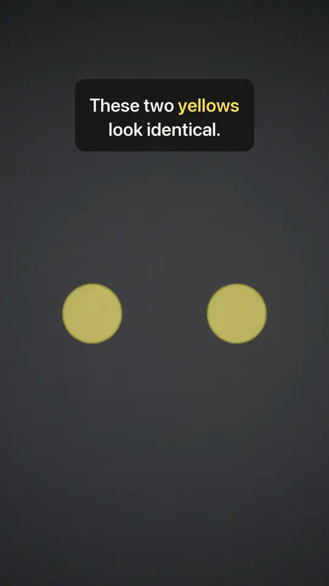

第2話「These two yellows look identical.」

上は音なしの動く画像。音つきは下。
再生されない時は 動画を直接開く
点数
| 見た目 | 85 |
| 事実 | 91 |
別の採点役による100点満点。見た目は 10/13 の版で 79。
直したこと
- プリズムの中を光が通り、出口で赤と緑に分かれて見える
- 冒頭から光の筋が入り、間延びしない
- 壁と床の濁り・上下の黒い帯をなくした
- 錐体と棒グラフの間に短い文を足し、文字のない時間をなくした
- 最後の牛乳のグラスを主役に
90点との差
- 牛乳が青い液体に見える。下の台座の余白が大きい
- 床に映る赤と緑の光が弱い
- 34秒の場面の切り替えが硬い
投稿はしていません。このページは 2026-10-22 20:09 に自動で消えます。